Design process · NID Gandhinagar
Campus Rituals
Reimagining daily rituals: safety near unsupervised machines at the wood workshop.
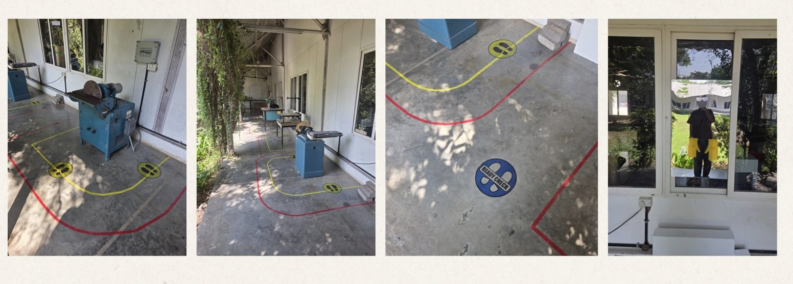
What makes something a ritual?
Ritual is a symbolic form of communication through which a culture expresses and reinforces its shared values, beliefs, and social meanings.
Clifford Geertz, The Interpretation of Cultures (1973)
We separated rituals from habits and traditions: a ritual is conscious and mindful, gives symbolic meaning to a moment and is often shared, where a habit is unconscious and mechanical. Then we mapped the daily rituals of campus: food, gym, sports, hygiene, laundry, waste, the library, studios and workshops.
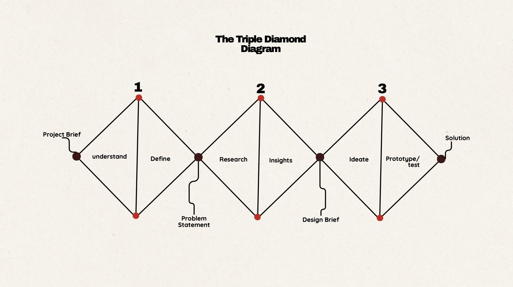
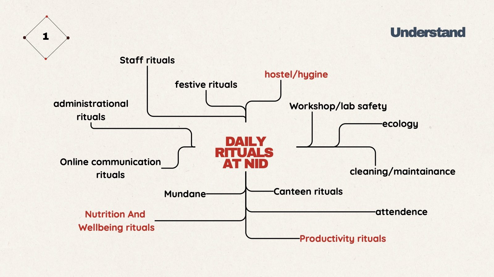
Narrowing in on the workshop
Across nutrition and well-being, hygiene and productivity, the workshop stood out: a lack of awareness of possible mishaps, a lack of safety gear and unclear instructions. We chose to reimagine safety rituals near unsupervised machines at the wood workshop.
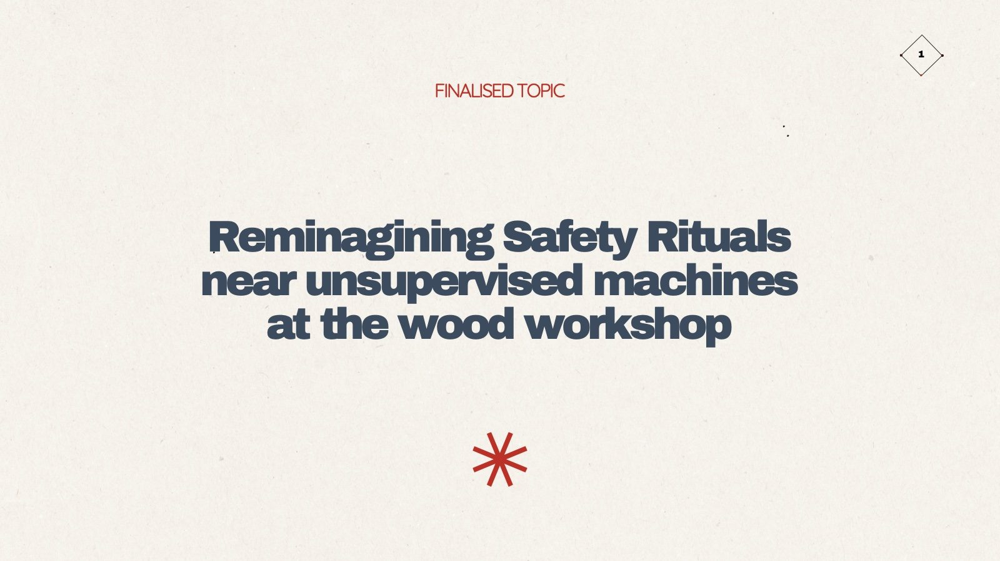
People, processes, place and parts
We mapped stakeholders, from students and workshop staff to supervisors, the inventory manager, repair staff and doctors, and then the territory itself.
The people
A culture driven by deadlines, where confidence often bypasses caution. PPE feels uncomfortable and cumbersome.
The processes
Official, documented rules versus improvised rituals. Unsafe habits are learned, especially during rush hours.
The place
Machines placed very close together, warm intense lighting, noise, dust and no signage or system for reporting hazards.
The parts
Some machines are faulty, fixes are reactive rather than proactive, and safety gear isn’t taken seriously.
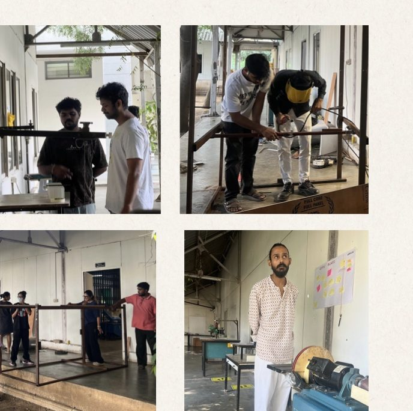
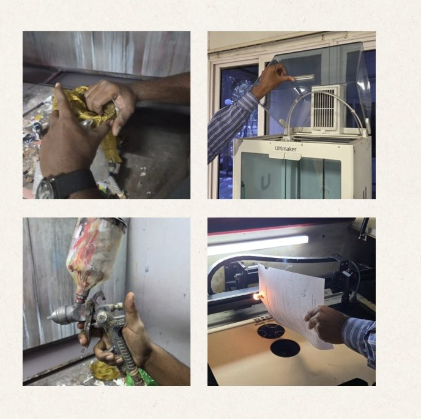
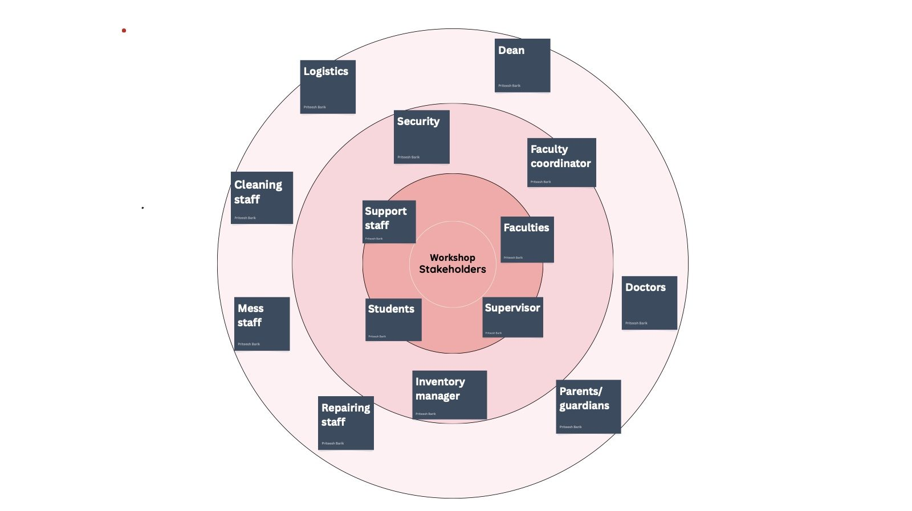
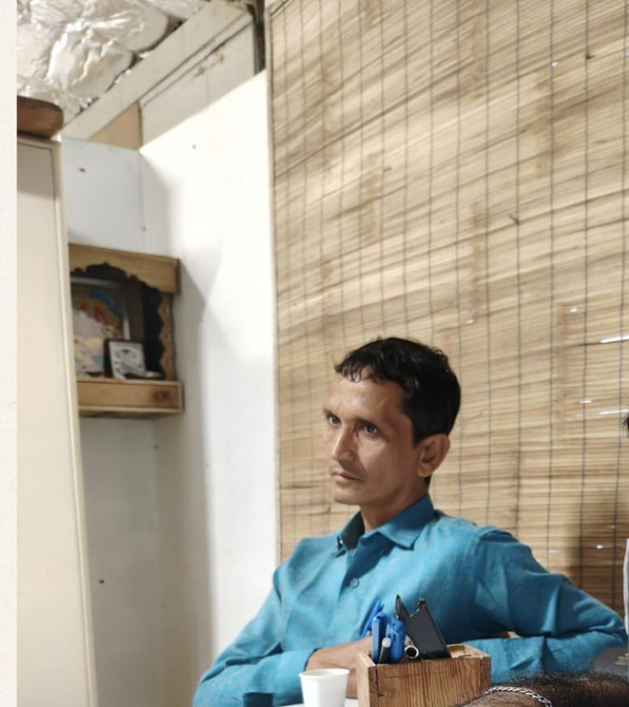
What students say
It’s too hot to wear gloves.
The machine’s old, but it works somehow.
I can manage; accidents won’t happen to me.
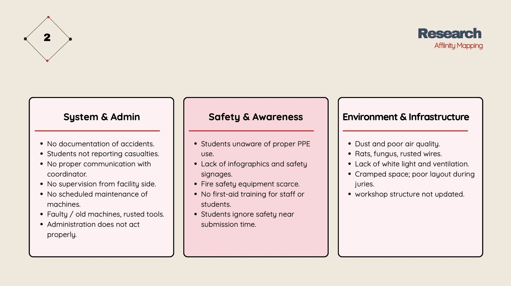
Why safety slips
- Students need a better everyday safety ritual at the workshop to prevent dangerous accidents.
- Students often don’t follow instructions because of deadline pressure.
- Students are prone to accidents when they’re distracted.
- Staff skip safety measures because they believe they’re experienced.
- Staff and students find PPE uncomfortable to wear for long.
- A lack of space makes accidents more likely.
- Without infographics or orientation, students don’t know step-by-step operating measures.
The design brief
To design and develop a conscious and responsible workshop etiquette system that encourages safer, more mindful practices and enhances the overall safety experience at NID Gandhinagar.
Small rituals, tried on site
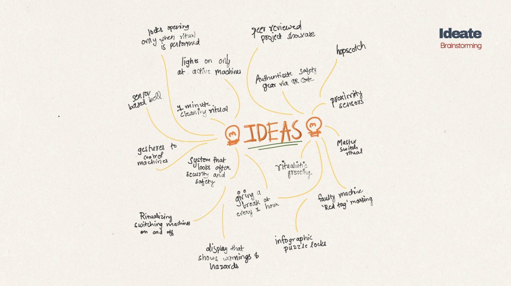
A workshop pledge
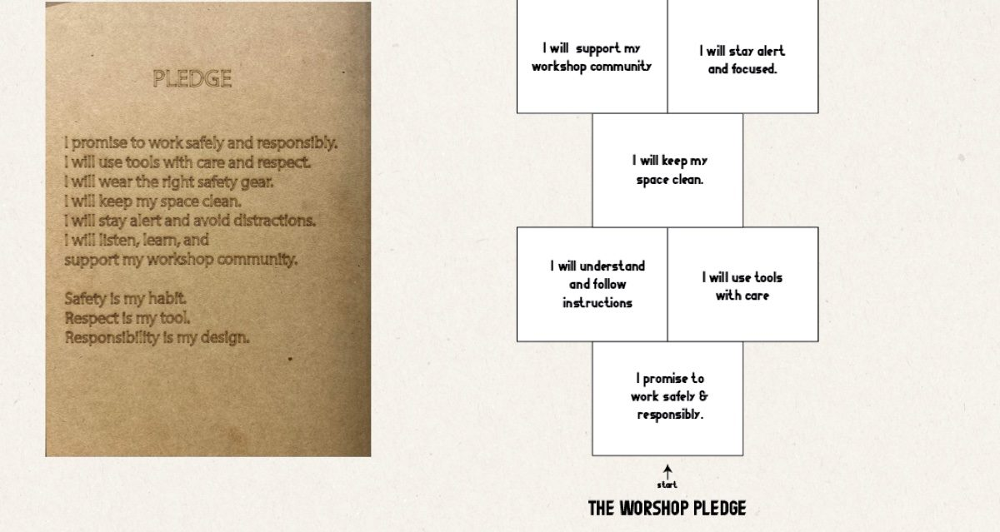
Tips and tricks board
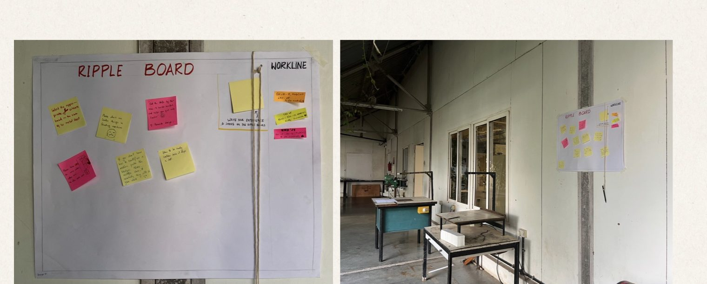
Stand here
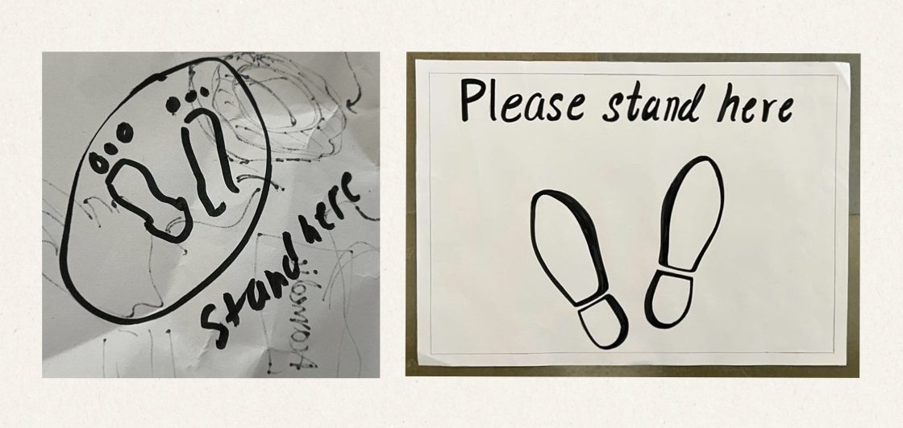
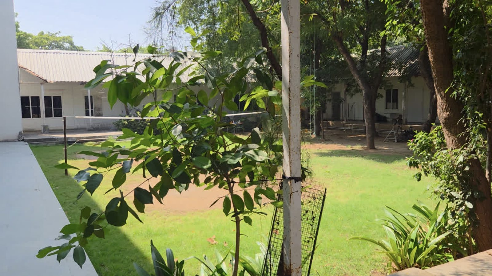
More ideas we explored
Safety infographics, an NFC sensor, a mirror selfie at the door, an access card and even a rap song.
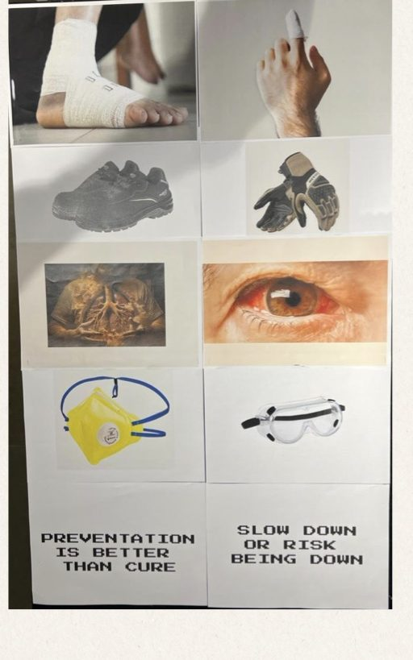
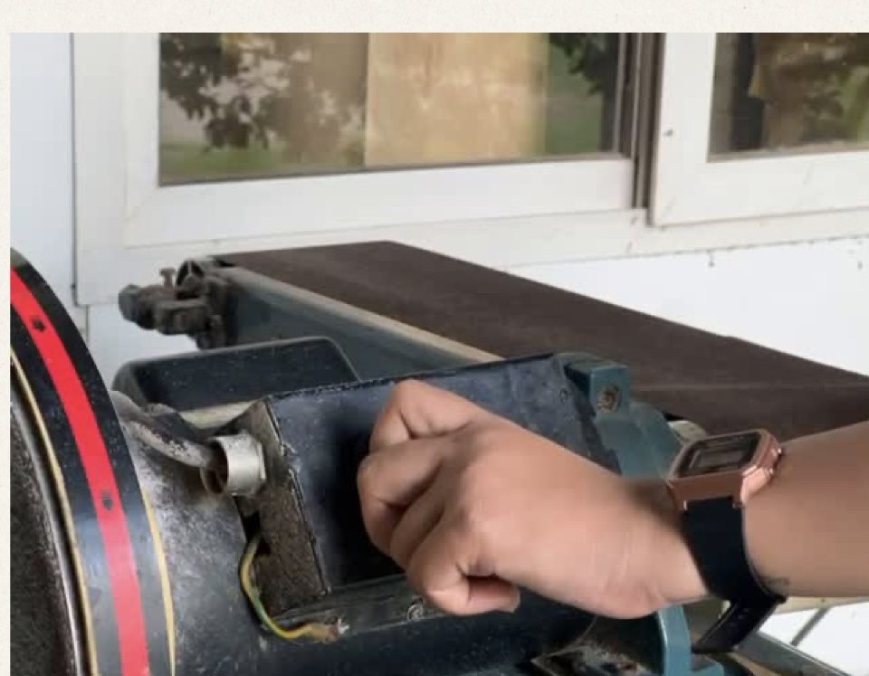
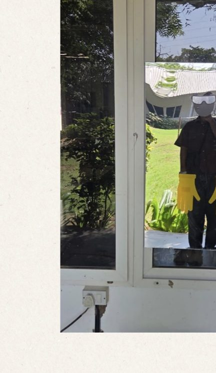
What we took away
Engagement over enforcement
Safety improves when participation is encouraged rather than rules enforced.
Ritual shapes behaviour
Small, repeated design rituals help make safety a natural habit.
Collective responsibility
Safety is shared between students and staff, building mutual care and accountability.